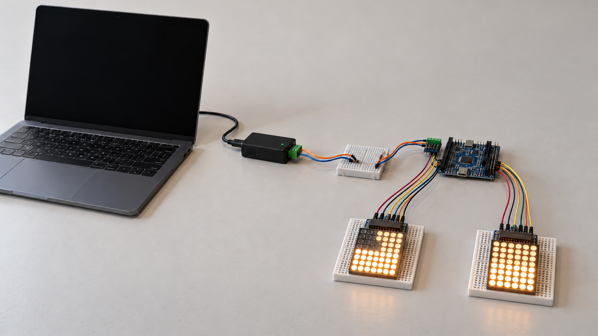

THE AFS PROTOTYPE
A vehicle ahead. High beam makes room.
See how a road scene on a laptop becomes a low and high beam pattern on two 8×8 matrices.
3D view of the target system · Static example
Full setup above. Swipe the detailed view below to inspect every connection.

FOLLOW THE CONNECTIONS
From the laptop to two matrix headlights.
One fixed scene shows the proposed physical path. The ECU chooses which high-beam pixels switch off.
- 01Laptop · MetaDrive
Python extracts the scene. A local socket carries observations to the C++ bridge on the same laptop.
- 02USB-CAN controller
The controller connects to the laptop and provides the CAN H and CAN L connections.
- 03Shared CAN breadboard
CAN H and CAN L enter this breadboard. A second pair leaves the same board for the ECU's CAN transceiver.
- 04STM32 ECU
The MCU receives the observation over CAN and decides which headlight segments should dim.
- 05Two matrix modules
The STM32 sends pixel patterns over SPI to the left and right MAX7219 modules. Each matrix has a global brightness setting.
- 06Two 8×8 matrices
Each matrix has 32 lower low-beam pixels and 32 upper high-beam pixels. ADB switches selected upper pixels off around the vehicle.